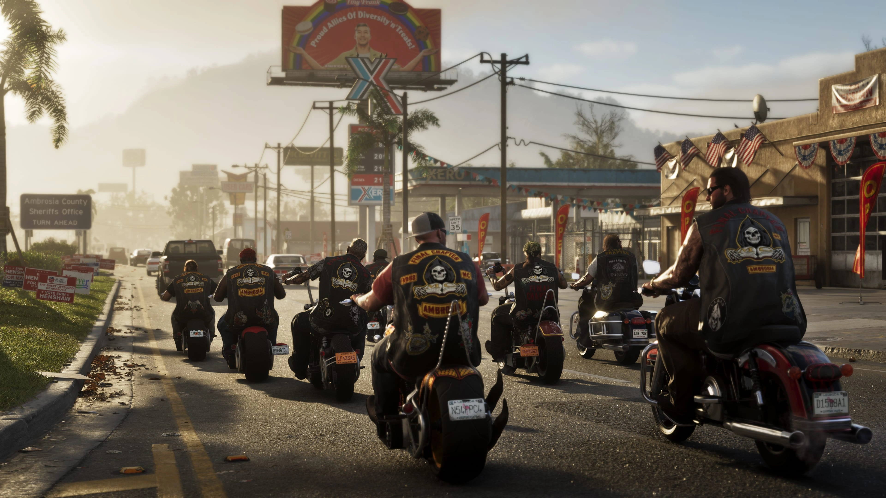
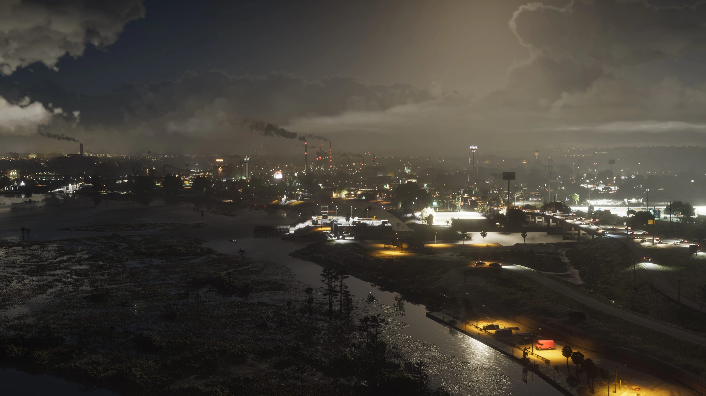
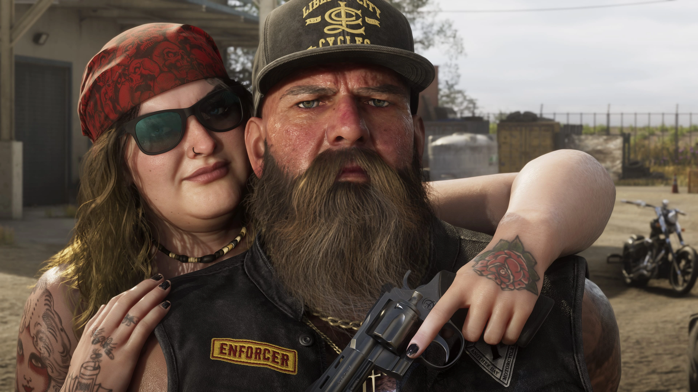
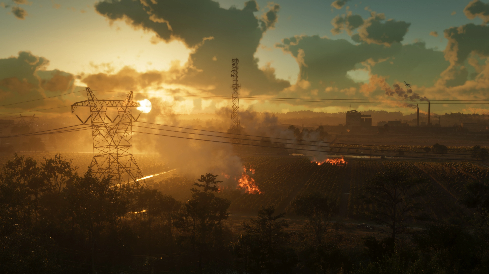
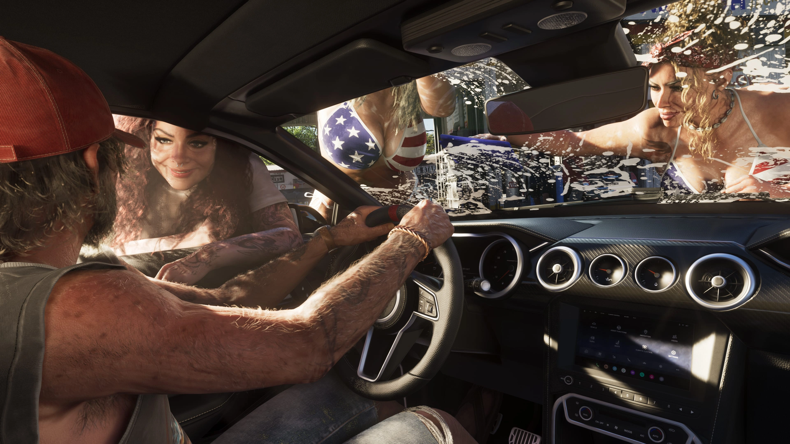

Ambrosia
Ambrosia representa o lado industrial do estado de Leonida. É uma região marcada pela produção de açúcar, pelos empregos da refinaria Allied Crystal e pela influência de uma gangue local de motociclistas que, segundo a Rockstar, fornece “quase todo o resto”.

Indústria, valores antigos e muitos atalhos
A apresentação oficial resume Ambrosia com uma combinação bastante específica: indústria norte-americana, valores tradicionais e decisões tomadas “a qualquer custo”. É uma descrição que coloca trabalho, poder e interesses locais no centro da identidade da região.
A economia gira em torno da refinaria de açúcar Allied Crystal. A Rockstar afirma que a empresa fornece os empregos, enquanto uma gangue local de motociclistas fornece quase todo o resto — sem explicar, por enquanto, o alcance dessa influência.
Esse pequeno texto já diferencia Ambrosia das praias, dos centros turísticos e dos pântanos vistos em outras partes de Leonida. Ainda assim, nomes de bairros, missões, atividades e a identidade da gangue permanecem sem confirmação pública.

CONFIRMADO: a refinaria Allied Crystal e uma gangue local de motociclistas são os dois elementos de Ambrosia mencionados diretamente pela Rockstar Games.

Allied Crystal e a paisagem industrial
A refinaria de açúcar Allied Crystal é a única empresa de Ambrosia citada nominalmente pela Rockstar. Ela aparece como o motor do emprego local e ajuda a explicar a presença constante de estruturas industriais nas imagens divulgadas para a região.
Chaminés, silos, galpões, áreas de processamento e iluminação noturna formam um cenário muito diferente da arquitetura turística de Vice City ou do ambiente tropical das Leonida Keys.
O material oficial permite reconhecer a força da indústria na paisagem, mas não informa quais edifícios poderão ser visitados, como a refinaria funcionará no jogo ou se terá ligação direta com alguma missão.
A presença dos motociclistas
A Rockstar afirma que uma gangue local de motociclistas fornece “quase todo o resto” em Ambrosia. A frase sugere uma influência que vai além da simples presença nas ruas, embora o estúdio ainda não tenha explicado como esse poder será representado na história.
Os screenshots associados à região mostram motociclistas e ambientes ligados a esse universo. Ainda assim, a descrição oficial não revela o nome da organização, sua liderança ou uma possível relação com Jason e Lucia.
Esses limites importam: roupas, emblemas e personagens vistos nas imagens podem oferecer pistas, mas não serão usados aqui para inventar uma hierarquia ou atribuir acontecimentos ainda não confirmados pela Rockstar.


Campo, indústria e fumaça no horizonte
Ambrosia combina áreas abertas e rurais com grandes instalações industriais. Essa convivência entre campo e fábrica cria uma paisagem própria dentro de Leonida, distante tanto da capital turística quanto das regiões mais selvagens do estado.
As imagens mostram estradas, terrenos agrícolas, estruturas metálicas e chaminés ao fundo. Elas ajudam a compreender o peso visual da produção de açúcar, embora nem todos os elementos tenham recebido nomes oficiais.
A Rockstar situa Ambrosia no coração de Leonida, mas ainda não publicou limites detalhados ou uma relação precisa entre a região, as cidades próximas e as estradas vistas nos screenshots.
Quem vive e trabalha em Ambrosia
As pessoas vistas nos materiais de Ambrosia aparecem cercadas por estradas, veículos, campos e instalações industriais. O conjunto transmite a ideia de uma comunidade moldada tanto pelo trabalho na refinaria quanto pela influência dos motociclistas.
Essa leitura vem da combinação entre a descrição e as imagens oficiais. Ela não confirma que cada pessoa mostrada trabalhe para Allied Crystal ou faça parte da gangue local.
A Rockstar ainda não apresentou moradores de Ambrosia pelo nome nem esclareceu o contexto narrativo das cenas. Por isso, esta página descreve o ambiente sem atribuir funções individuais a personagens não identificados.

O que a Rockstar já revelou
A descrição oficial é curta, mas define com clareza os dois centros de poder da região e o tom escolhido pela Rockstar para apresentar Ambrosia.
Allied Crystal
A refinaria de açúcar fornece os empregos e ocupa uma posição central na economia e na paisagem local.
Gangue de motociclistas
Uma organização local, ainda sem nome confirmado no texto oficial, fornece “quase todo o resto”.
Saúde e riqueza
A Rockstar apresenta Ambrosia como o ponto onde começa uma disputa pela saúde e pela riqueza de Leonida.
O que os materiais revelam sobre Ambrosia
Sem antecipar missões ou histórias, a combinação do texto oficial com os screenshots permite compreender melhor a identidade social e visual da região.
Empresa dominante
A Allied Crystal é apresentada como a principal fonte de empregos da região.
Influência paralela
A gangue de motociclistas ocupa o espaço deixado fora da economia formal.
Indústria pesada
Chaminés, silos e instalações de processamento marcam o horizonte de Ambrosia.
Áreas rurais
Estradas e campos aproximam a região da produção agrícola ligada ao açúcar.
Dependência econômica
O texto oficial apresenta emprego e influência criminosa como forças inseparáveis do cotidiano local.
Valores antigos
A Rockstar usa a expressão para construir uma região conservadora, industrial e disposta a pagar seu preço.
Outra Leonida
Ambrosia amplia o estado para além do turismo, das praias e da vida noturna de Vice City.
O que permanece aberto
A identidade da gangue, seus líderes, missões e relação com os protagonistas ainda não foram reveladas.
Imagens de Ambrosia
Screenshots oficiais divulgados pela Rockstar Games para a região.
Ambrosia no mapa de GTA VI
A Rockstar localiza Ambrosia no coração de Leonida. Essa é a indicação geográfica oficial disponível, mas ainda não existe um mapa detalhado mostrando seus limites ou as ligações rodoviárias com as demais regiões.
Os screenshots ajudam a reconhecer campos, estradas e estruturas industriais, sem fornecer coordenadas. Por isso, o mapa do GTA6Zoone manterá separadas as informações oficiais e as reconstruções geográficas produzidas pela comunidade.
Explorar o mapa →O que está confirmado
A Rockstar situa Ambrosia no coração do estado, sem divulgar limites detalhados.
A refinaria de açúcar é a única empregadora citada nominalmente na descrição oficial.
A Rockstar menciona uma gangue de motociclistas, mas não informa seu nome no texto da região.
A biblioteca oficial reúne screenshots identificados com o nome da região.
Rockstar Games
Esta página utiliza informações e materiais publicados pela Rockstar Games. Observações sobre elementos visíveis nos screenshots são tratadas como leitura editorial e não como confirmação de missões, mecânicas ou personagens.
Site oficial de Grand Theft Auto VI


TRANSPARÊNCIA EDITORIAL: a Rockstar confirmou a refinaria Allied Crystal e a influência de uma gangue local de motociclistas, mas ainda não revelou o nome dessa organização, seus líderes ou sua relação com a história. O GTA6Zoone não atribui missões, funções ou identidades às pessoas mostradas nas imagens quando essas informações não foram confirmadas.